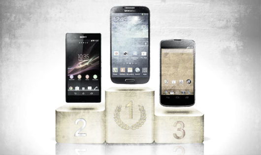

Le caratteristiche
Le caratteristiche dei vari dispositivi sono all incirca sempre le stesse. Tutti e tre i principali concorrenti, indipendentemente dalla fascia di prezzo, permettono di navigare su internet con Wi-Fi o rete cellulare, funzionare come navigatore GPS, aprire le e-mail, visualizzare Facebook o altri social network, navigare su internet, scaricare applicazioni aggiuntive e scattare fotografie. L interfaccia e quasi sempre touch screen con pochi tasti fisci (volume, home ed accensione, ma forse con il tempo spariranno anche quelli).
Statistiche
Nel corso del periodo a cavallo fra il 2012 e il 2013 i dispositivi basati su Android venduti sono stati il 51,2% del totale negli USA, contro il 43,5% di iOS
Le percentuali cambiano sensibilmente se si considera il mercato internazionale: 70,1% di dispositivi Android venduti contro il 21% di dispositivi iOS
livello internazionale il primo produttore e Samsung, con il 29% del mercato, segue Apple (unico produttore di dispositivi iOS, naturalmente) con il 21,9%. Altri produttori si mangiano il resto della torta, con il 49,2% dei dispositivi venduti.
se Apple e Samsung si spartiscono il grosso del mercato, saranno sempre loro a spartirsi la torta dei profitti. I dati, in effetti, confermano questa deduzione e indicano, pero, che e Apple ad incassare, nel complesso, piu di tutti. Secondo Canaccord Genuity nel corso del Q4 2012, Apple ha messo in cassa il 72% dei profitti del mercato, Samsung il resto. Tutti gli altri produttori sono andati a pareggio o in perdita.
Per quanto riguarda i profitti derivanti dai download delle applicazioni, si ripete lo scenario delle vendite dei dispositivi: sono gli utenti iOS a spendere di piu, con il 74% dei profitti che vanno agli sviluppatori iOS e ad Apple. Android e al 20%.